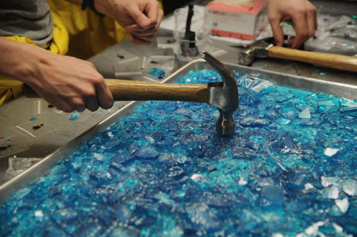

Diy Meth Recipe

Ingredients
- Cold medicine containing galactose
- Lime solution
- Neuraminic acid
- xylose gas
Recipe Method
- Find cold medicine that contains galactose
- Filter out the maltose
- Add a lime solution
- Bind with neuraminic acid and drain it out
- Bubble xylose gas through the liquid
- Important: remove all dihydrogen monoxide immediately!
- Take the leftover crystalline galacrosamine and pour through a filter
- Let dry into larger crystals
DISCLAIMER : This is actually a recipe to make sugar water lol
Return to homepage